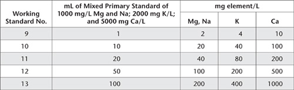

While aqua regia digestion will rarely recover 100% of all elements in soils and related solid matrices, particularly when these are bound to silicates, such digestions still have many useful applications. One is for monitoring anthropogenic contaminant levels in solid matrices. Conventional aqua regia digests use a mixture of one part of concentrated nitric acid (HNO3) to three parts of concentrated hydrochloric acid (HCl) (e.g. Andersen and Kisser 2004; Kisser 2005). The critical reaction between the two acids is shown as Eqn. 4.
Reverse aqua regia is a 3:1 mix of concentrated HNO3 to concentrated HCl. Many researchers prefer reverse aqua regia because the high relative concentration of HNO3 is efficient in decomposing sulfides, while total acidity is sufficiently strong to solubilise easily reactive metallic elements. These include those of Cu and Hg, which can enter soils in biosolids and other wastes. The inclusion of hydrogen peroxide (H2O2) is sometimes used as a final step in the digestion process to complete the decomposition of Hg in the sample matrix (Lomonte et al. 2008). Reverse aqua regia also lessens interference during subsequent instrumental analysis from high Cl– concentrations (Andersen and Kisser 2004) from the HCl component, although the interference is not eliminated, especially for analysis by ICP-MS.
In this reverse aqua regia method, the digestate from a temperature-controlled digestion block is diluted to volume, and centrifuged. Subsequent analysis by ICPAES is preferred for elements such as Al, Ca, Co, Cr, Cu, Fe, K, Mg, Mn, Mo, Na, Ni, P, Pb, S and Zn. Cadmium at ultra-trace to trace concentrations is best determined by GFAAS or ICP-MS. Examples of typical measurement-performance when analysed at specified wave lengths by ICPAES are shown in Table 17.4.
Safety glasses, gloves and lab coats must be worn when handling acids, acid digests, standard solutions and other chemicals. Moreover, all operations involving the transfer or dilution of acids should be carried out in a fume cupboard or in a lamina-flow hood. Pipetting of solutions by mouth must not occur.
Digestion block
Use a digestion block with a programmable controller and heat shield that in combination provide even, consistent heating to digestion tubes according to the following sequence:
1. Step to 75°C, hold and heat for 30 min.
Table 17.4. Examples of ICPAES analytical wavelengths and expected performance characteristics of Method 17B1.
Analyte |
Wavelength (nm) |
Uncertainty (%)# |
LOR |
Al |
394.4 |
10–15 |
0.003% |
Ca |
430.25 |
8–10 |
0.003% |
Cd |
228.8 (GFAAS) |
25 |
0.02 mg/kg |
Co |
231.16 |
15 |
1.0 mg/kg |
Cr |
267.7 |
15 |
6.0 mg/kg |
Cu |
219.96 |
6–8 |
5.0 mg/kg |
Fe |
240.5 |
15 |
0.007% |
K |
766.5 |
10–15 |
0.04% |
Mg |
383.8 |
8–10 |
0.001% |
Mn |
257.6 |
10–15 |
1.0 mg/kg |
Mo |
202.0 |
10–15 |
3.0 mg/kg |
Ni |
227.9 |
15 |
5.0 mg/kg |
P |
177.4 |
10 |
0.001% |
Pb |
220.3 |
15 |
5.0 mg/kg |
S |
181.97 |
15 |
0.001% |
Zn |
213.86 |
15 |
6.0 mg/kg |
# Uncertainty estimates are based on two times relative standard deviations of replicated analysis of reference materials over time (D Lyons, pers. comm.).
2. Step to 100°C, hold and heat for 30 min.
3. Step to 110°C, hold and heat for 60 min.
4. Step to 140°C, hold and heat for 400 min.
ICPAES
Calibrate and operate as per manufacturer’s instructions. A high-resolution instrument, capable of automated operation, is preferred.
GFAAS
Calibrate and operate as per manufacturer’s instructions.
ICP-MS
Calibrate and operate as per manufacturer’s instructions.
Miscellaneous Equipment
(a) 50 mL graduated Greiner or Falcon centrifuge tubes – polyethylene/polypropylene, screw cap
(b) Polyethylene centrifuge tubes – 10 mL capacity
(c) Pipettes, variable volume
(d) Digestion tubes – borosilicate glass, 300 mm × 25 mm, calibrated usually to 25.0 mL
Deionised Water
This water should be triple-deionised, with a minimum resistivity of 4.0 MΩ/cm.
Hydrochloric Acid [HCl; 10 mol/L (ρ20° 1.16 g/mL)]
Nitric Acid [HNO3; 15 mol/L (ρ20° 1.4 g/mL)]
0.1% (v/v) Nitric Acid
Dilute 1.0 mL nitric acid (HNO3, 15 mol/L; trace-metal grade) with deionised water and make volume to 1.0 L.
10 μg/L Mix v Tuning Solution (for ICP-MS analysis)
Prepare as for Method 18D1.
70 μg/L In, Re and Sc Internal Standard (for ICP-MS analysis)
Prepare as for Method 18D1.
Elemental Primary Standards
Commercially prepared standard solutions
Preferably obtain commercially prepared, high quality, standard solutions (typically 1000 mg element/L – with certificates of analysis) for use as individual Primary Standards for elements including Cd, Co, Cr, Cu, Mo, Ni, Pb, Mn and Zn. Commercially prepared standard solutions may also be used for Fe, Ca, K, Mg, Na, P and S, if they can match the applicable concentrations outlined later.
Obtain, freshly dry (separately, as specified elsewhere in this volume), and cool in a desiccator the following trace-metal grade chemicals: aluminium potassium sulfate, AlK(SO4).12H2O; ferrous ammonium sulfate, (NH4)2 SO4.FeSO4.6H2O; calcium carbonate, CaCO3; potassium nitrate, KNO3; magnesium oxide, MgO; sodium chloride, NaCl; potassium dihydrogen orthophosphate, KH2PO4; ammonium sulfate, (NH4)2SO4. Include other elements as necessary. Next prepare individual Primary Standard solutions (with a shelf life up to two years), guided by the following:
5000 mg Al/L
Transfer 43.958 g of AlK(SO4)212H2O into a 500 mL volumetric flask. Dissolve in deionised water and add 25 mL of HNO3. Mix thoroughly and dilute to volume with deionised water.
10 000 mg Fe/L
Transfer 35.108 g of (NH4)2 SO4.Fe SO4.6H2O into a 500 mL volumetric flask. Dissolve in deionised water and add 25 mL of HNO3. Mix thoroughly and dilute to volume with deionised water.
Mixed 5000 mg Ca/L, 1000 mg Mg/L, 2000 mg K/L, 1000 mg Na/L
Weigh 1.658 g MgO and 12.486 g CaCO3 and wash into a 1.0 L conical flask with about 50 mL each of deionised water. Add 40 mL of HNO3 and heat until all CO2 is expelled. Cover and allow to cool, then transfer quantitatively to a 1.0 L volumetric flask with CO2-free (boiled) deionised water and mix well. To this mixture add quantitatively a solution of deionised water containing 2.542 g dry wt of NaCl and a separate solution of deionised water containing 5.172 g dry wt of KNO3. Mix well and make to 1.0 L with deionised water. Transfer the mixed standard to a clean plastic bottle. Should MgO not assay at 100% purity, adjust the weight according to the assay obtained.
Mixed 2500 mg P/L, 1,000 mg S/L
To a 1.0 L volumetric flask add ≈500 mL of deionised water, 40 mL of HNO3, 10.985 g dry wt of KH2PO4 and 4.122 g dry wt of (NH4)2SO4. Stopper the flask, and then swirl the contents vigorously until the solids are completely dissolved. Dilute to volume with deionised water.
Mixed Elemental Secondary or Intermediate Standard (A).
10 mg Mo/L; 40 mg/L of Co, Cr, Cu, Ni, Pb; 100 mg Zn/L; 200 mg Mn/L
Accurately transfer by pipette to a single 500 mL volumetric flask containing 25 mL of HNO3 (and at least an equal volume of deionised water) volumes of Elemental Primary Standards (1000 mg element/L) as follows:
• 5.0 mL of Mo;
• 20 mL each of Co, Cr, Cu, Ni and Pb;
• 50 mL of Zn, and
• 100 mL of Mn.
Intermediate Cd Standard (B) – 10 mg Cd/L
Transfer by pipette 10.0 mL of Cd Primary Standard of 1000 mg Cd/L to a 1.0 L volumetric flask. Add 50 mL of HNO3 and dilute to volume with deionised water. This solution may be stored for up to 6 months.
Dilute Cd Standard (C) – 50 μg Cd/L
Transfer by pipette 5.0 mL of Intermediate Cd Standard (B) (10 mg Cd/L) to a 1.0 L volumetric flask. Add 20 mL of HNO3 and dilute to volume with deionised water. This solution may be stored for up to 2 months.
Reverse Aqua Regia Working Standards
Transfer (by pipette or 10 mL micro-burette or, for volumes >10 mL, a 50 mL burette) the required volumes of individual Elemental Primary Standards and/or Secondary/Intermediate Standards to 500 mL volumetric flasks (for Tables 17.5–17.8). To each 500 mL volumetric flask, add 5.0 mL of 10 M HCl, 15 mL of 15 M HNO3, and dilute to volume with deionised water. Prepare a calibration blank by matrix matching the acid background without the addition of any standard. The Working Standards outlined in Table 17.5 to Table 17.9 are best if freshly prepared on the day of use, but may be stored in inert containers for up to one month. Note that final volume for Cd Working Standards (Table 17.9) is 100 mL.
Dry sub-samples of air-dry (≈40°C) soil/sediment in a clean, forced draft laboratory oven. The air supply to the oven should be filtered to at least Class 1000 standard if ultra-trace to trace concentrations of one or more elements are being targeted. Cool then mill to <0.05 mm in a Zirconia (strongly recommended) ring and puck head and compatible ‘shatterbox’ for a time sufficient to achieve the specified soil particle size; typically 1–2 min. Take account of Note 1 of Method 17A1.
Weigh 0.5 g of sample (to the nearest 0.001 g) of <0.05 mm particle size into a pre-cleaned borosilicate glass digestion tube (300 mm × 25 mm with a restricted neck, calibrated to 25.0 mL). Include a duplicate sample, at least two reference soils (at least one secondary or certified reference soil) and two reagent blanks in a typical digestion run of 50 tubes.
Add 3.75 mL of HNO3 and 1.25 mL of HCl to each digestion tube (see Note 2), swirl, then place these on the digestion block located within an operating fume cupboard. Stand overnight with the fume cupboard running. Next morning, gently re-swirl each digestion tube to ensure no soil has attached to the bottom or sides of the digestion tube.
Table 17.5. Volumes of Secondary/Intermediate Standard (A) for the preparation of 500 mL of Mixed Reverse Aqua Regia Working Standards for Mo, Co, Cr, Cu, Ni, Pb, Zn and Mn and the concentrations of those Working Standards.
Table 17.6. Volumes of relevant Elemental Primary Standards for the preparation of 500 mL of Mixed Reverse Aqua Regia Working Standards for Al and Fe and the concentrations of those Working Standards.
Working Standard No. |
mL of 5000 mg Al/L standard |
mg Al/L |
5 |
10 |
100 |
6 |
150 |
1500 |
7 |
5 |
100 |
8 |
50 |
1000 |
Table 17.7. Volumes of relevant Primary Standards for the preparation of 500 mL of Mixed Reverse Aqua Regia Working Standards for Ca, Mg, Na and K and the concentrations of those Working Standards.

Table 17.8. Volumes of relevant Primary Standards for the preparation of 500 mL of Mixed Reverse Aqua Regia Working Standards for P and S and the concentrations of those Working Standards.
Working Standard No. |
mL of each relevant Elemental Primary Standard of 2500 mg P/L and 1000 mg S/L |
mg/L |
|
P |
S |
||
14 |
1 |
5 |
2 |
15 |
10 |
50 |
20 |
16 |
20 |
100 |
40 |
17 |
50 |
250 |
100 |
18 |
100 |
500 |
200 |
Table 17.9. Volumes of Cd Standard (C) of 50 μg Cd/L [dispense using a 10 mL burette (or variable volume pipette) into a 100 mL volumetric flask to which has been added 1.0 mL of 10 M HCl and 3 mL of 15 M HNO3)] for the preparation of Reverse Aqua Regia Working Standards for Cd, and the concentrations of those Working Standards. Make to volume with deionised water.
Working Standard No. |
mL of 50 μg Cd/L Standard (C) |
μg Cd/L |
19 |
2 |
1 |
20 |
6 |
3 |
Set up the programmable controller of the digestion block and commence digestion, checking at least every 15–20 min to ensure digestions are proceeding normally. If necessary, remove any digestion tubes from the digestion block where the sample has bubbled up the tube and out of contact with the acids. In those cases, return the separated sample to the sample/acid mix by washing the internal surface with some 0.1% HNO3. Return these digestion tubes to their position on the digestion block and watch for more bubbling. If by the time the temperature is up to 100–140°C and some of the soil is still stuck on the side of the tube, rinse the soils down with a further small volume of 0.1% HNO3.
Let the digest boil down until there is just under 1 mL of liquid left or the soil/acid mixture has the consistency of a thick sludge. Remove tubes from the block and allow to cool to room temperature. If any digest tube boils dry, remove from the block and add 1 mL of Reverse Aqua Regia Mixture (0.75 mL HNO3 + 0.25 mL HCl). Heat on block for a further 10 min or so then remove.
Make up accurately to 25 mL with 0.1% HNO3. Mix well (with a vortex stirrer if available), then transfer each digest solution to a 50 mL centrifuge tube and cap. Centrifuge for 15 min at 1500 rpm.
Decant about 10 mL of each clarified digest solution into 10 mL polyethylene centrifuge tubes or as suited to the auto-sampler of the ICPAES. Set up and operate the ICPAES according to manufacturer’s instructions. Check calibration drift on a regular basis and recalibrate/normalise if necessary. If an unknown analyte concentration exceeds that of the highest working standard, dilute the sample digest with calibration blank and repeat the determination and record the dilution ratio.
If necessary, set up a GFAAS or ICP-MS according to the manufacturer’s instructions for the determination of Cd.
In the case of ICP-MS, dilute 2 mL of each clarified soil digest solution with at least 8 mL of 0.1% HNO3, to reduce total soluble salts to an acceptable level. (Make allowance for this dilution when calculating results.) Also check for instrument response/performance, using the 10 μg/L Mix v Tuning Solution. All instrument performance criteria should be confirmed at this point. Mix the 70 μg/L In Re and Sc Internal Standard with each standard and diluted sample extract in the proportion 0.42 mL/min of Internal Standard to 0.6 mL/min of diluted digest solution during operation of the ICP-MS. (This is used to compensate for drift.) Also, check a reference solution every 10 samples and recalibrate if drift exceeds 10%. If analyte concentration exceeds the standard calibration range, dilute the clarified soil extracts with calibration blank and repeat relevant determinations. See Note 4 of Method 18D1 for guidelines on key ICP-MS settings.
To calculate mg/kg of analyte in soil, multiply the instrumental result in mg/L by 50 (assumes 0.5 g sample to 25 mL final volume). To report concentrations in % as is often required for Al, Ca, Fe, Mg, P and S, divide mg/kg by 104. Also account for any subsequent dilutions of sample digests.
Report elemental concentrations (% or mg/kg of element) on an oven dried basis. Use the air-dry moisture to oven-dry moisture ratio to convert to an oven-dry concentration. Refer to Method 2A1 for guidance with regard to this soil moisture calculation.
1. All chemicals should be at least analytical grade, while for precise measurements at ultra-trace to trace concentrations, trace-metal grades are preferred. Ultra pure acids can be prepared from analytical reagent grade acids by sub-boiling point distillation.
2. Add the mixed acids slowly to calcareous soils as these will almost invariably froth up inside the digestion tube.